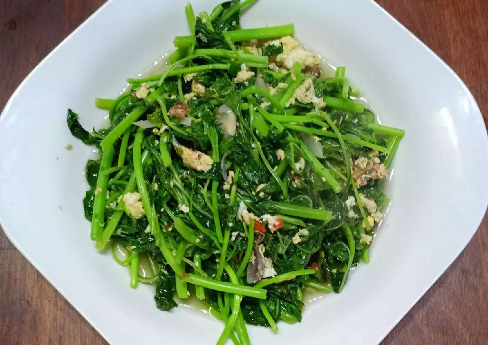

Tumis Bayam Telur

Deskripsi
Masak yg sat set sat set... Buat sarapan... Akhirnya masak tumis bayam telur ini. Gampang buatnya... Enak hasilnya...
Bahan-Bahan
-
4 ikat bayam
-
2 butir telur
-
6 siung bawang merah
-
1 buah tomat kecil
-
secukupnya gula, garam, penyedap rasa, lada
-
secukupnya minyak
Cara Membuat
-
Tumis, bawang merah dan bawang putih hingga harum, masukkan tomat
-
Masukkan telur, orak arik
-
Masukkan bayam, beri garam, gula, penyedap dan merica, koreksi rasa, angkat dan sajikan